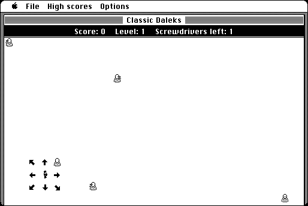

Download
classicdaleks12.zip (41K) Classic Daleks 1.2 repackaged into a zipped hfs disk image and checksum file. The disk image can be mounted with Mini vMac.
classicdaleks12.hqx (49K) Classic Daleks 1.2 in the original format.
copyright: Ingemar Ragnemalm
mod date: Jun 10, 1995
license: freeware
official url :
Miscellaneous Games by Ingemar Ragnemalm
"Daleks game with working high score list." Under Options menu, choose '9" (Toaster)'

If you find these downloads useful, please consider helping the Gryphel Project, which hosts them.
Here are the md5 checksums for the downloads, signed with Gryphel Key 5:
--------- GRY SIGNED TEXT --------- dd1c1e2030360c22db1745db9b692404 classicdaleks12.zip 4513b13218cd10c733b2e586a0a0138c classicdaleks12.hqx ------- BEGIN GRY SIGNATURE ------- Gry/4Xa8CFcUzxdN/ATKx3GlDXZ55SMER4xq0R019N5LATw5mLl0335lGMLthWqG VLre2Sl6wXdHw5usb3siUmQbMxSLE5CeQlm3uyOD/XWJwAk1HoW/8JXBBQCSe8Ey VfKEB24lPiICQIIFDSFNfai+3NgF5XvOiQ5B5xQlFcJOIHADJcNVg2DkrC/QBhrw -------- END GRY SIGNATURE --------